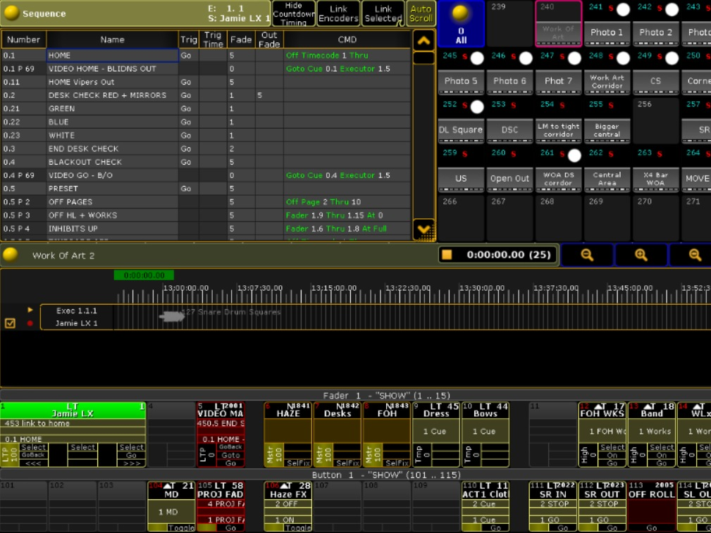
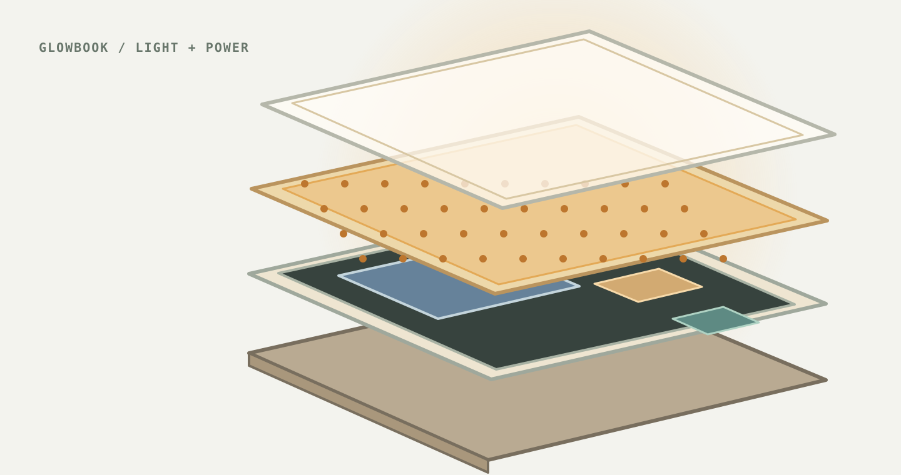
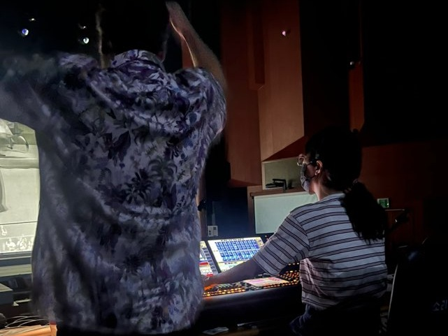
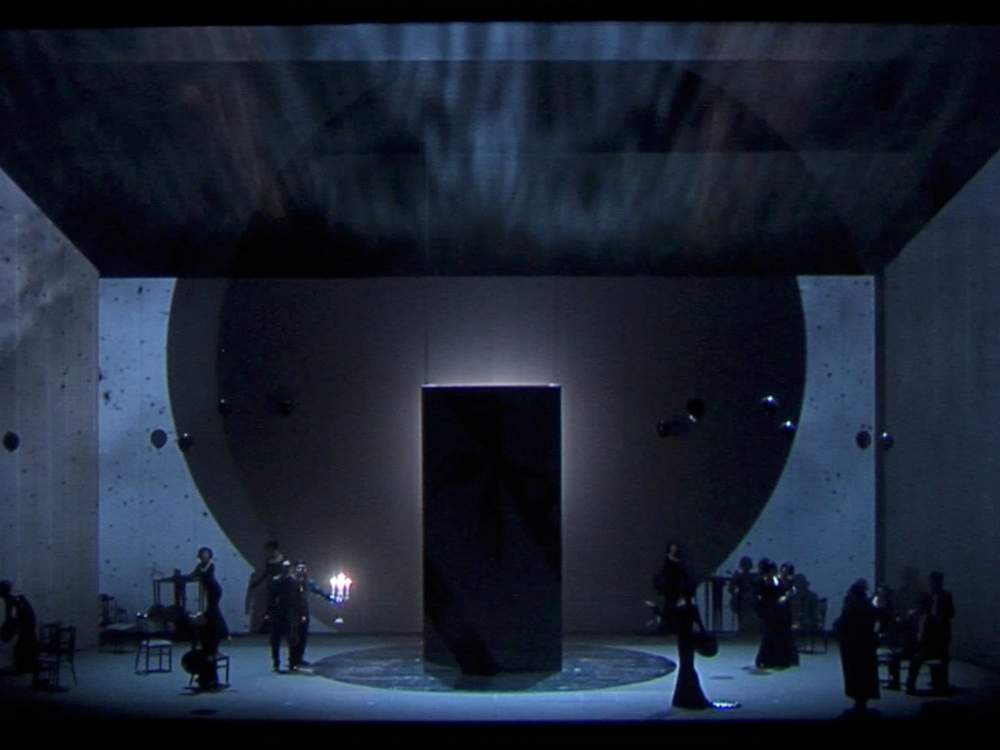
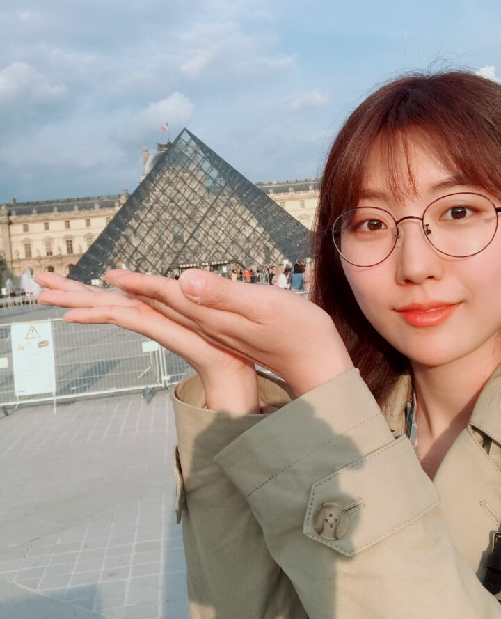

Everybody's Talking About Jamie
SHOWNOTE
LG Arts Center, Seoul · 2020
Lighting Designer · Researcher
How do light, sound, movement, material, and time evoke feeling and imagination?
I design with these elements in performance. I study how their relationships give an event its character, and why that character can be experienced differently across people and situations.

These projects led me to ask how light works with sound, bodies, images, and objects to shape an experience.

Albany Park Theater Project · Chicago, IL · 2026
Lighting design · prototype build · cue integration
A cue-linked illuminated book. Three power tests led to a working prototype; build and QLab/Eos photographs document the result and its control workflow.
View build notes ↗Selected professional work in lighting programming, localization, and production systems.

SHOWNOTE
LG Arts Center, Seoul · 2020

National Theater of Korea
National Theater of Korea, Seoul · Sori Arts Center, Jeonju · 2025

Korea National Opera
Seoul Arts Center, Seoul · 2019
Awards, selections, and exhibitions.
Observation, translation, color, and form.


